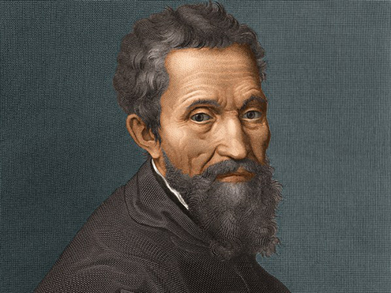

Principales artistas de la época.
Paolo Uccello (1397-1475)
También de origen florentino, Paolo Uccello se destacó como uno de los grandes pintores del Renacimiento temprano. Sus primeros años los pasó en su Florencia natal, formándose en el taller de Ghiberti, antes de mudarse a Venecia, ciudad en donde aprendió el arte de las mayólicas, loza decorada de uso bastante extendido en el Renacimiento.
Leonardo da Vinci (1452-1519)

Intelectual y artista italiano, quien también se convirtió en una de las máximas figuras del Renacimiento, tanto por su trabajo pictórico, como por su amor e innovación en el mundo de las Ciencias, en donde destaca también por haber ideado máquinas asombrosas de gran visión futurista
Alberto Durero (1471-1528)

Originario de Nuremberg, llegó a ser el artista más importante del Renacimiento alemán, destacándose como un pintor excepcional, así también como en las técnicas de grabado y xilografía. Se cree que Durero incursionó en el Renacimiento a raíz de sus largas visitas a Venecia.
Miguel Ángel Buonarroti (1475-1564)
Por su parte, este artista italiano, conocido mejor solo como Miguel Ángel llegó a convertirse en el escultor más importante del Renacimiento florentino, aun cuando también ejerció el arte de la Pintura, área en donde su obra más destacada son los frescos de la Capilla Sixtina, en Roma.
Rafael Sanzio (1483-1520)
Otra de las grandes figuras del Renacimiento fue Rafael, reconocido como uno de los mejores pintores de este movimiento artístico. A pesar de que nació en Umbro, a los veintiún años se trasladó a Florencia, en donde tuvo la oportunidad de estudiar la obra de Miguel Ángel y Leonardo.
Tiziano VecCellio (1485-1576)
Conocido simplemente como Tiziano, este hombre llegó a ser conocido también como el pintor más virtuoso de la Venecia renacentista. Sus pinturas abordaban temas religiosos, así como motivos mitológicos, destacándose por su gran uso del color, y por la vitalidad y realismo que le imprimía a sus dibujos.